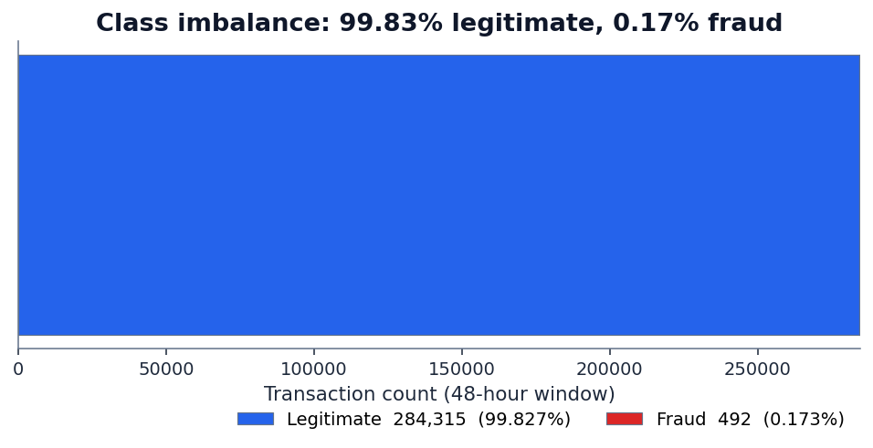
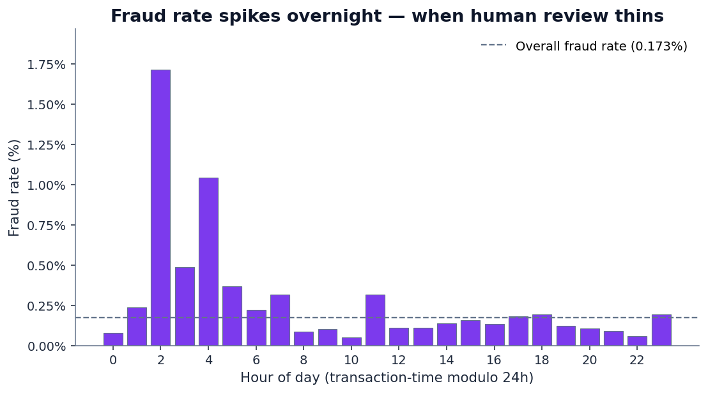
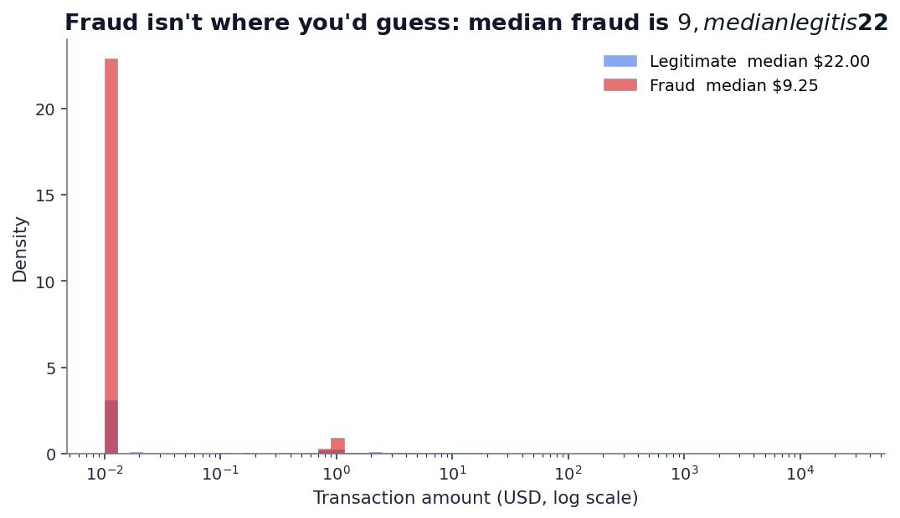
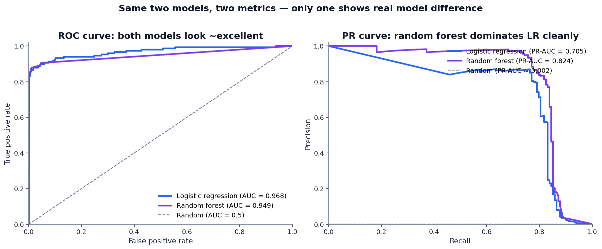
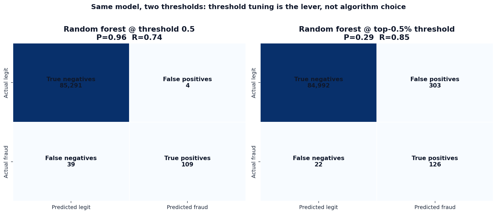
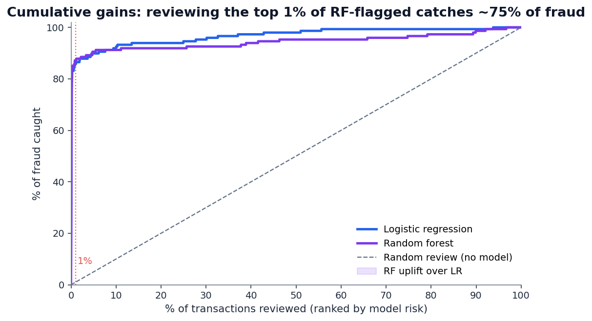
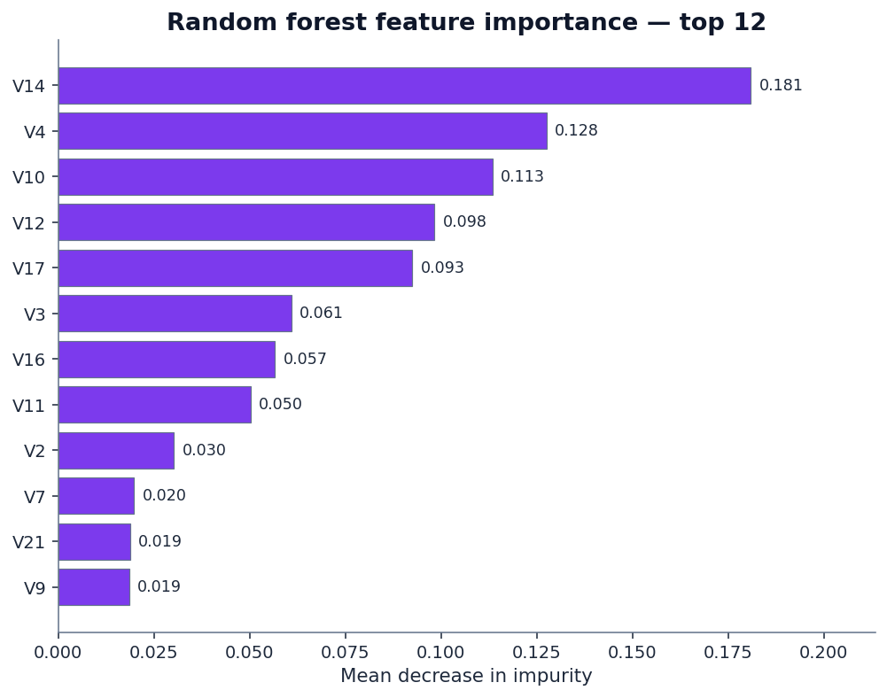

Every introductory machine-learning class teaches accuracy and ROC AUC as the headline metrics for binary classification. Most of those classes also use balanced datasets where those metrics work reasonably well — cancer/no-cancer split 50/50, churn/no-churn split 30/70, that kind of thing.
Real-world fraud detection is not that. The fraud rate on this Kaggle dataset is 0.173% — about one in 578 transactions. At that level of imbalance, the metric you choose decides whether your fraud team thinks the model is a success or a failure. We're going to show why.
The data: mlg-ulb/creditcardfraud, a publicly available dataset of 284,807 European cardholder transactions across a 48-hour window in September 2013. Of those, 492 are confirmed fraud. The features are anonymized — 28 of the 30 columns are PCA-transformed for privacy (labeled V1 through V28), with only Time and Amount kept in their original form.
That's a more interesting setup than it sounds. We can't lean on the columns being “income” or “loan grade.” The model has to find signal in features it can't name. Which makes this a particularly clean test of where the signal actually lives — and which metric is reading it correctly.
1. The class imbalance is what eats your metrics

This is the imbalance trap. When the rare class is what matters, the metric you reach for first — overall accuracy — is dominated by the easy class. A model that simply predicts “legitimate” for every single transaction beats almost any naive predictor at “accuracy.” The number looks great. The customers losing money to fraud see no benefit.
The same problem leaks into the next metric most teams reach for: ROC AUC. We'll get to that one in a minute.
2. Where the fraud actually lives
Before we train any models, two things from the raw data are worth flagging — both because they're counterintuitive and because they shape the modeling choices later.
First, fraud has a time-of-day pattern. The dataset spans 48 hours, and if we treat transaction time modulo 24 hours as a rough “hour of day,” fraud rate isn't constant:

Second, fraud amounts are smaller than legitimate ones — at the median. This one surprises people:

The mean tells a different story (fraud mean is $122 vs $88 for legit — a few huge fraud transactions pull the average up), which is why looking at distributions matters. Means lie under fat tails. So do single-threshold “flag if amount > X” rules.
3. Training two models
Same two model families as our previous posts on credit-risk modeling and loan default prediction: logistic regression (linear, regulator-friendly) and random forest (non-linear ensemble). Both trained with class_weight=balanced on a 70/30 stratified split. Test set: 85,443 transactions, 148 of them fraud.
The headline numbers:
RF 0.949
RF 0.824
RF 96.5%
RF 73.6%
Read those carefully. The two models are doing very different things, and the headline summary metric you pick decides which one looks better.
4. ROC AUC vs. PR-AUC — the chart that explains everything
The single most important plot in this post:

This is the lesson. The two AUC metrics disagree because they answer different questions:
- ROC AUC asks: “for a randomly chosen fraud and a randomly chosen non-fraud, how often does the model rank the fraud higher?” The answer is dominated by the model's behavior on the easy 99.83% of legitimate transactions. Both models get easy negatives right; the score barely sees their disagreement on the hard positives.
- PR-AUC asks: “as you walk down the model's ranking from most-suspicious to least, how well does precision hold up?” This is dominated entirely by behavior on the 0.17% of positives — which is the actual operating region for a fraud team.
At extreme class imbalance, ROC AUC saturates near 1.0 for any model that gets the easy stuff right. The difference between “0.95 ROC AUC” and “0.97 ROC AUC” sounds tiny but can hide a 2× difference in how many false alarms your analysts wade through to find the same number of real frauds.
5. The threshold matters more than the algorithm
Both models output a probability between 0 and 1. The default is to flag anything above 0.5 as fraud. With class imbalance this severe, that's rarely the right cutoff.

Which one is “better” depends entirely on the fraud team's operational budget. If they can review 300 transactions per day, the top-0.5% threshold catches more fraud. If they can only review 50 per day, the high-precision threshold is the right cut. The model didn't change — only the operating point did.
6. The operational view: cumulative gains
For a fraud team, the metric they actually care about is roughly: if I have capacity to review the top X% of flagged transactions, what fraction of fraud will I catch? That's a cumulative gains curve:

This is the chart you want in front of a fraud-ops director. “Give me a budget to review 1% of transactions and I'll catch 87% of your fraud” is a defensible business case. “My model has 0.96 ROC AUC” is not.
7. What the random forest found in anonymized features
Even though V1–V28 are PCA components and have no human-readable names, the random forest's importance ranking tells us how concentrated the fraud signal is across them:

This is what “a model is finding something” looks like in feature-importance terms: a few features doing most of the work, with a long tail of marginal contributors. Compare that to our loan-default post, where the top feature's importance was barely above the bottom feature's — that was the signature of a model grasping at noise.
8. What this means for equity scoring
QScoring scores equities, not fraud, but the metric-choice question rhymes. Single-stock scoring is also an imbalanced ranking problem: the genuine breakouts and breakdowns over the next quarter are the rare events; most stocks drift along sector-and-market beta. The wrong evaluation metric makes everything look like it's working.
- Headline R² against forward returns is the equity-research equivalent of accuracy. It's dominated by the boring middle, where most stocks live. A score with high R² can still miss the rare moves that actually pay.
- Information coefficient (IC), the Spearman correlation between score and forward return, is partway better — it's rank-based, so the middle dominates less.
- Top-decile vs bottom-decile spread, sometimes called the quintile spread, is the operational metric. “If I buy the stocks the score ranks in the top 10% and short the bottom 10%, what's the annualized return spread?” That's the equity equivalent of precision-at-top-K. It's what we publish on the methodology page and what we'd argue is the only metric worth reading from any equity score.
If you only remember one thing from this post: the metric you optimize is the metric you get. Choose accordingly.
See the same discipline applied to stocks.
QScoring rates every U.S.-listed equity using vetted features and operationally-meaningful evaluation metrics — no black-box models, no vanity numbers. Browse the universe or score any ticker free.
Open a free account →